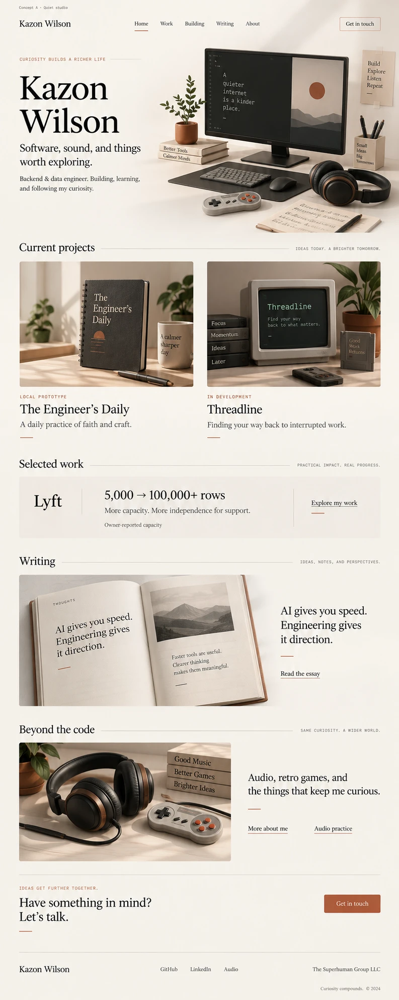
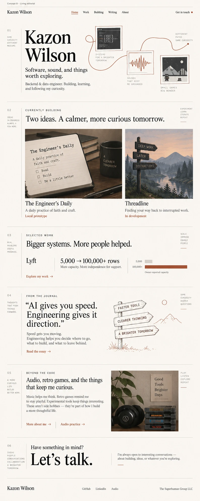
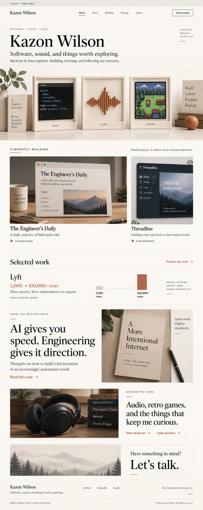
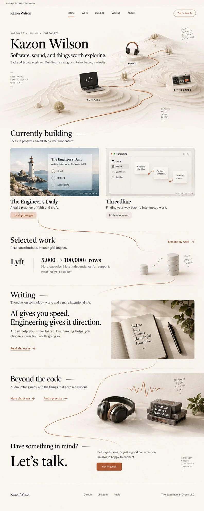

Building / Personal website
Four ways the
same palette
could feel.
Generated design study
A · Quiet studioB · Living editorialC · Project galleryD · Open landscape
Chosen for Home.Explored, not selected.Explored, not selected.Redirected toward About.

A

B

C

D
thesuperhuman.us/building/personal-website/story
Sep 9, 2026 · Alternatives